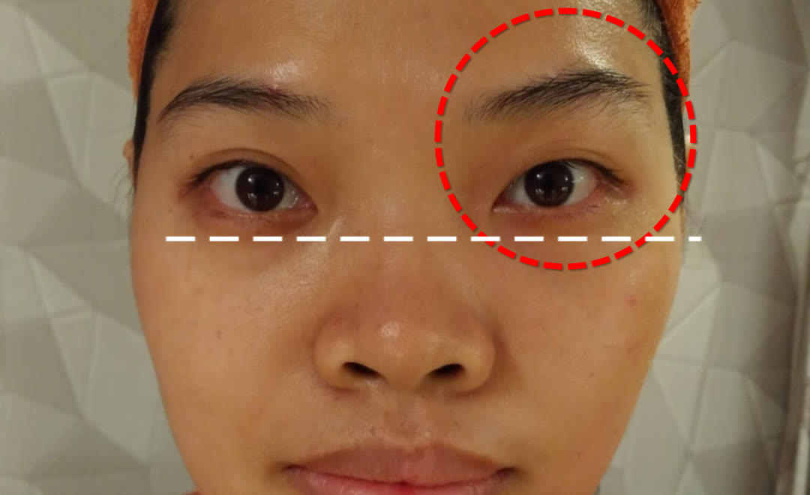

Start here
What is facial bojin?
A precise, one-spot face and neck self-care method, not gua sha with a new name. See the tool, watch a 45-second demo, and run a 10-second mirror check, taught by Yu-Ting Lan in Taiwan.
The short answer
Facial bojin (撥筋, bō jīn) is a precise, one-spot face and neck self-care method taught by Taiwan-based instructor Yu-Ting Lan. Instead of sweeping a wide stone across the cheek like gua sha, you work one small area at a time: small, complete circles with a rounded stainless steel tip (about 3–5 mm across) held at a low 30°–45° angle, about a minute per zone (three passes), while your other hand steadies the skin. Pressure stays comfortable. It is gentle self-care, not medical care, and it is not for broken skin, the eyelid itself, or recently injected areas.
What does “bojin” mean, and where does it come from?
“Bojin” — also written bo jin, and sometimes misheard as “butin gua” — comes from the Mandarin 撥筋 (bō jīn). Bō means to move or part something aside with a small, deliberate motion; jīn refers to the body’s sinews and soft tissue. In Taiwan it describes careful hands-on work with that tissue. On this site the word means one specific thing: the face-and-neck self-care method taught by Yu-Ting Lan, founder of Héhé Studio. The name itself is not evidence of any effect; what matters is the sequence, placement, and comfortable pressure you learn.
Her instructor certificates and classroom photographs are on the About page. You may have arrived here because your face feels tight by evening, your expression looks tired in photos, or you saw a small steel stick and wondered what it is for. You do not need to buy anything to understand the method.
What do you actually learn in the Bojin Method?
The Bojin Method teaches three choices you make on every stroke: order (which area comes first), angle (how the tool meets the skin), and position (the exact spot, plus the spots you leave alone). A typical beginner zone takes about a minute: small, complete circles moving outward, repeated for three passes, with the supporting hand keeping the skin from dragging. These are teaching parameters drawn from Yu-Ting’s classes, not a clinically validated dose, and you adjust them to comfort. More pressure never makes a routine better.
Order 順序
The sequence shown in a lesson. Start where the demonstration starts, finish one area before the next, and leave room to pause.
Angle 角度
How the tool meets the skin. Begin low (around 30°–45°) and adjust to comfort; there is no single correct degree, and pressing harder never replaces a better angle.
Position 位置
The exact spot shown, rather than guessing across the whole cheek. Placement includes knowing which areas, like the eyelid, to leave alone.
The one thing everyone gets wrong: pressure
A light touch is the right touch while you learn contact and direction, especially near the eyes. If contact hurts, leaves bruising, or irritates your skin, stop. Those reactions are not proof that the method “reached deeper.” The safety guide explains when to skip hands-on face care altogether.
Side by side
Is bojin the same as gua sha?
No. Gua sha and bojin share roots but teach different things. Facial gua sha usually sweeps the broad edge of a flat stone in long strokes across a wide area. Bojin works one small spot at a time with a rounded steel tip, using short, complete circles, a low 30°–45° starting angle, and a supporting hand. Think of gua sha as smoothing a whole sheet and bojin as easing one fold. Neither should bruise the face. Guidance about gua sha, such as Cleveland Clinic’s facial gua sha article, does not automatically apply to bojin.
| Fingertips | Gua sha stone | Bojin stick | |
|---|---|---|---|
| Contact shape | Soft pad, about 1–1.5 cm wide | Flat or curved edge, several cm long | Rounded tip ~3–5 mm, plus a broad edge |
| Typical angle | Flat to the skin | Held nearly flat | Low, ~30°–45°, adjusted to comfort |
| Movement | Slow circles or gentle presses | Long strokes in one direction | Short, complete circles traveling outward, one spot at a time |
| Time per zone | About 1 min | Varies by routine | About 1 min, three passes |
| Good for | Learning direction; delicate under-eye area | Broad areas: jaw, neck, cheeks | Small areas: brow line, temple, jaw angle |
| Limits | Spreads pressure; mostly moves the skin surface; tires the hand | Hard to place precisely near the brow | Needs a lesson; never on the eyelid or eyeball |
Angles, sizes, and times are teaching parameters from Yu-Ting Lan’s classes, not clinical measurements. Read the fuller comparison in gua sha and bojin: the tool and the technique, or choose what to hold with the fingers, stone, or stick guide.
Why your face feels held
Why does your face feel tight after a day of screens?
Long screen sessions change how your face holds itself. The American Academy of Ophthalmology notes that people normally blink about 15 times a minute but only about 5–7 times a minute at a screen. While you focus, the orbicularis oculi (the ring muscle around the eye) narrows into a slight squint, the corrugator draws the brows together, the frontalis lifts heavy lids, and the suboccipital muscles at the base of the skull hold a forward head. Hours of this can leave the brow feeling heavy by evening. This describes common held-tension patterns, not a medical assessment; eye pain or vision changes belong with an eye doctor.
Early research measured the same drop: office workers blinked about 22 times a minute when relaxed and about 7 times a minute reading on a screen (Tsubota & Nakamori, N Engl J Med, 1993; see also Patel et al., 1991). The American Academy of Dermatology adds that contracting the same facial muscles for years contributes to lines, which is why it suggests sunglasses to cut down on squinting. Bojin does not change any of that biology. What it offers is a few quiet minutes to notice where you are holding, and to let it go.

“The women who love this didn’t come to it for a miracle. They came for something honest they could do for themselves, a few minutes at a time.”
Your tool
What is a bojin stick, and do you need one to start?
A bojin stick is a slim, polished stainless steel tool about 11.4 cm (4.5 in) long and about 43 g, with two working ends: a broad, smooth edge for the forehead, cheeks, and neck, and a small rounded tip, roughly 3–5 mm across, for one precise spot along the brow, temple, or jaw angle. Steel is easy to clean and doesn’t chip. You do not need one to begin: clean fingertips teach direction and comfort first, and the full course starts with a no-tool fingertip module. Never use the tip on the eyelid or eyeball.

See it
What does a real bojin demonstration look like?
The 45-second clip below is taken from Module 3 of The Bojin Eye Method and shows Step 1, above the brow, on the left side only. Watch three things: each movement is one small, complete circle, not a side-to-side wiggle; the circles travel outward from between the brows to the tail of the brow, where the tool lifts away; and one outward pass counts as one, repeated three times. The supporting hand stays still. The transcript underneath lists every spoken instruction with its timestamp, so you can jump to any moment.
Step 1, above the brow: small complete circles, three passes (0:45)
Yu-Ting Lan · from Module 3 of The Bojin Eye Method · left side only. Tap a timestamp to jump.
- Set-up. “Step one. Above the brow. Start between the eyebrows. Make each movement one small, complete circle. Then move outward.”
- The rule. “This is not a side-to-side wiggle. One full pass outward counts as one. We will do three. Okay, let’s begin.”
- Pass one. “The starting point is here. First small circle. Keep moving outward. Keep each circle complete. At the tail of the brow — lift.”
- Passes two and three. “Back to the start. Pass two.” … “Pass three.” The same outward circles repeat, ending with a lift at the brow tail.
- Next position. “After the three passes, come to the middle of the brow — about one thumb-width higher.”
Try it tonight
How do you try bojin tonight with just your fingertips?
You can try the same pattern tonight with no tool, in about 1 minute for one side. Use a few drops of oil or cream so nothing drags. Rest the pads of your index and middle fingers between your brows, make small, complete circles outward along the brow bone to the tail, lift off, and return to the start; do three passes. Keep your other hand flat on the forehead above as a supporting hand. Then compare the worked side with the other side in the mirror. Stop if anything stings, aches, or reddens.
Prepare
Clean hands, a little oil or cream, mirror in even light. Rest your supporting hand flat on the forehead, just above the brow you will work.
About 15 secondsCircle outward
Small, complete circles from between the brows to the tail. Lift off at the tail, return to the start. Three passes, light and slow.
About 30 secondsLift & compare
Hands down. Look at both brows and both upper lids. Notice whether the worked side feels lighter or looks more open.
About 15 secondsBefore you go further
Why fingertips (and most home tools) stop at the surface
Facial skin is thin. High-frequency ultrasound studies put it at roughly half a millimeter on the upper eyelid and around 1–2 mm across the forehead and cheeks (Ha et al., Plast Reconstr Surg, 2005). A light fingertip stroke mostly moves that top ~2 mm layer, which is exactly why it feels pleasant and is safe to learn on.
If the tightness comes back within about 30 minutes, the pull usually isn’t coming from the skin you’re stroking. In Yu-Ting’s classes, tension in the face and around the eyes most often traces back to the back and sides of the head: the galea aponeurotica (the firm sheet over the top of the skull), the suboccipital muscles at the base of the skull that hold the head forward, and the masseter and temporalis that tug up along the side of the head toward the temple. Pressing harder on the surface won’t reach them; it only drags thin skin. That is why the full method works in a set order rather than rubbing one spot longer.
Frequent headaches with a tight band around the head are worth discussing with a doctor; the NHS guide to tension headaches explains when to get help.
Not sure where your pull starts? The 10-second mirror check below compares left and right, so you know which area to work on first. Run the mirror check ↓
10-second self-care observation
Does one side of your face hold more tension? Try the 10-second mirror check
Most faces carry tension unevenly, because we chew, sleep, hold a phone, and squint at a screen more on one side. Stand at a mirror in even light, relax your face, and spend about 10 seconds on each check below, comparing left with right. Tick any card where you notice a clear difference. It is a self-care observation, not a medical assessment, and a small amount of asymmetry is completely normal. A difference that appears suddenly, or comes with numbness, weakness, or pain, needs a doctor today.
Jaw clicking, locking, or pain when chewing is a question for a dentist; the NIH’s National Institute of Dental and Craniofacial Research explains TMD.

Your next step
Which tension pattern sounds most like you?
Pick the description that fits you best; it takes about three seconds. Each pattern tends to start in a different place, so the most useful next step is different too. If your eyes tire easily or your brows sit low, the first stop is usually the ring of muscle around the eye (the orbicularis oculi) and the tight scalp above it. If one side of your jaw looks different because you chew mostly on one side, the easiest place to start is easing the overworked masseter. And if gua sha never seemed to do much, the missing piece is usually method rather than the tool. Your choice only changes the suggested next step below. Nothing is saved, and no email is needed to choose.
3-second tension selector
Where does your face feel most held?
Choose a pattern above to see your best starting point.
The Bojin Eye Method: US$79 one-time, lifetime access, 14 video lessons, 3 printable PDF guides, 14-day refund. Checkout runs through Systeme.io with PayPal or card. Educational self-care, not medical care.
Straight talk
What can’t bojin do?
Bojin is not medical care and does not treat any condition. It will not remove wrinkles, erase under-eye bags, or do what Botox or filler does, and it is not a stronger form of gua sha. What some people report is that a few comfortable minutes leave the face feeling less held and looking more rested, temporarily; that is a personal experience, not proof of a structural change. Skip it on broken, sunburned, or inflamed skin, after recent injections or facial surgery, and ask your doctor first if you take blood thinners.
The complete list, with nothing softened: what bojin can and cannot do. Had work done? Read what to wait for after Botox or filler and who should skip bojin for now.
Common questions
Bojin questions women ask most
Is bojin just gua sha with a different name?
No. Gua sha usually sweeps a flat stone over a broad area; bojin works one small spot at a time with a rounded steel tip, short complete circles, and a supporting hand. You can learn bojin’s sequence with a gua sha stone you already own, but the two practices are not interchangeable, and gua sha research does not automatically apply to bojin.
Is “bo jin” or “butin gua” the same thing as bojin?
Yes, those are spelling and hearing variants of the same word, 撥筋 (bō jīn). Bo jin is the usual romanization. “Butin gua” is how it often sounds to English speakers, and it has no connection to gua sha beyond the sound. On this site, bojin always means the face-and-neck method taught by Yu-Ting Lan.
Do I need a bojin stick, and what should it look like?
Not to start. Fingertips teach direction and comfort first. If you buy one later, look for polished stainless steel, about 11 cm long, with a broad smooth edge and a small rounded tip (roughly 3–5 mm) and no sharp seams. The tool cannot choose placement or pressure for you; see the tool buying guide.
Is bojin safe? Who should skip it?
Done with comfortable pressure, most healthy adults find it gentle. Skip it on broken, sunburned, or inflamed skin and during a rosacea flare; wait after Botox, filler, or facial surgery for as long as your provider advises; and ask your doctor first if you take blood thinners or bruise easily. Never use the tip on the eyelid or eyeball. Pain, bruising, or numbness means stop. More in the safety guide.
How often should I do bojin, and for how long?
The beginner plan used in Yu-Ting’s classes is about a minute per zone, two or three times a week, with rest days between. That is a teaching arrangement, not a clinically established dose. Skip a session if your skin is tender, and judge by comfort and a side-by-side mirror comparison rather than by redness or soreness. See the frequency guide.
Sources and further reading
- American Academy of Ophthalmology. Computers, Digital Devices, and Eye Strain.
- Tsubota K, Nakamori K. Dry eyes and video display terminals. N Engl J Med. 1993;328(8):584. PubMed 8426634.
- Patel S, Henderson R, Bradley L, et al. Effect of visual display unit use on blink rate and tear stability. Optom Vis Sci. 1991. PubMed 1766652.
- Ha RY, Nojima K, Adams WP Jr, Brown SA. Analysis of facial skin thickness: defining the relative thickness index. Plast Reconstr Surg. 2005. PubMed 15861089.
- American Academy of Dermatology. 11 ways to reduce premature skin aging.
- Cleveland Clinic. Gua Sha: Benefits and How To Do It.
- NHS. Tension headaches.
- NIH National Institute of Dental and Craniofacial Research. TMD (temporomandibular disorders).
New here? Follow the beginner path, or read the safety guide before you practice.